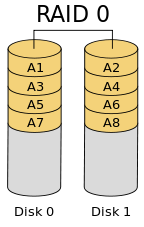
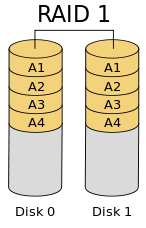
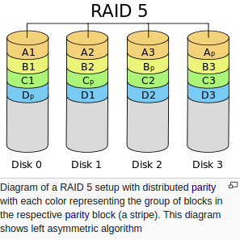
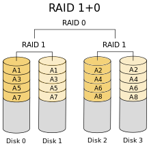
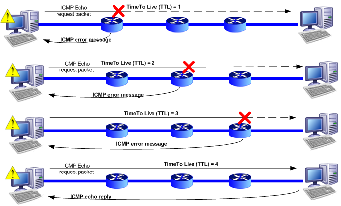
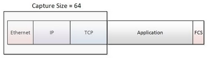

DevOps / Sys Admin Q & A #2 : Networks
A TCP connection on a network can be uniquely defined by 4 things. What are those things?
The TCP layer on either end maintains table entries corresponding to the 4-tuple (remote-ip-address, remote-port, source-ip-address, source-port). This 4-tuple uniquely identifies a connection.
How many NTP servers would we configure in our local ntp.conf?
Over time, a computer's clock is prone to drift. This is problematic as many network services require the computers on a network to share the same accurate time. Accurate time is also needed to ensure that file timestamps stay consistent. The Network Time Protocol (NTP) is one way to provide clock accuracy in a network.
It is recommended that we list at least 2 remote servers that we can synchronize against. One will act as a primary server and the other as a backup.
What does the column reach mean in ntpq -p output?
$ ntpq -p
remote refid st t when poll reach delay offset jitter
==============================================================================
-hydrogen.consta 200.98.196.212 2 u 27 64 37 111.513 81.326 7.609
*clock.xmission. .GPS. 1 u 25 64 37 46.528 54.514 17.582
-2604:a880:800:1 131.234.137.24 2 u 24 64 37 111.094 71.791 8.620
+cheezum.mattnor 129.7.1.66 2 u 29 64 37 64.255 71.892 7.889
+golem.canonical 140.203.204.77 2 u 29 64 37 172.709 71.005 7.794
It is an 8-bit left shift octal value that shows the success and failure rate of communicating with the remote server. Success means the bit is set, failure means the bit is not set. 377 is the highest value.
The simple diagram looks like this:
CLIENT <---> PROXY <---> SERVER (Browser) (Web Server)
The HTTP request is sent from Client to port 8080 of the Proxy Server. The Proxy Server then originates a new HTTP request to the destination site. The proxy, depending on the configuration, will often add a "X-Forwarded-For" header to the HTTP request. The log files on the destination web site will show the proxy's IP address, but may or may not be configured to log the "X-Forwarded-For" address.
It was popular years ago, and they still stick around. However, the proxy server, most of the part has been replaced by NAT that is now build into routers. We still use proxy server every once in a while for very specific usage such as hacking/security communities, mostly to hide the id of the connection side.
Internally (within a network), it can be very useful for caching proxy(Squid). For instance, this can be useful when lots of our network computers trying to do Windows Update, the proxy server can cache GBs of files once and for all, and saving bandwidth.
Visit What's HAProxy.
RAID stands for Redundant Array of Independent Disks.
RAID employs the techniques of striping, mirroring, or parity to create large reliable data stores from multiple general-purpose computer hard disk drives (HDDs). The most common types are RAID 0 (striping), RAID 1 and its variants (mirroring), RAID 5 (distributed parity).
RAID 0 (striped disk array without fault tolerance) - splits ("stripes") data evenly across two or more disks, without parity information, redundancy, or fault tolerance. Minimum 2 drives to implement.

RAID 1 (mirroring & duplexing) - consists of an exact copy (or mirror) of a set of data on two or more disks; a classic RAID 1 mirrored pair contains two disks. Minimum 2 drives to implement.

RAID 5 (independent data disk with distributed parity blocks) - consists of block-level striping with distributed parity. Parity information is distributed among the drives. It requires that all drives but one be present to operate. Upon failure of a single drive, subsequent reads can be calculated from the distributed parity such that no data is lost. Minimum 3 drives to implement.
Picture source : Standard RAID levels

RAID 10, also called RAID 1+0 and sometimes RAID 1&0, is similar to RAID 01 with an exception that two used standard RAID levels are layered in the opposite order; thus, RAID 10 is a stripe (RAID 0) of mirrors (RAID 1). Note that there are mirrorings (disk0-disk1) & (disk2-disk3) and striping (disk01)-(disk23). Minimum 4 drives to implement
To see RAID in action, try Jestor.
We use the dig (domain information groper) command to query Domain Name System (DNS) name servers.
When we pass a domain name to the dig command, by default, it displays the A record (the ip-address of the site that is queried) as shown below:
$ dig epicmath.com ; <<>> DiG 9.10.3-P4-Ubuntu <<>> epicmath.com ;; global options: +cmd ;; Got answer: ;; ->>HEADER<<- opcode: QUERY, status: NOERROR, id: 280 ;; flags: qr rd ra; QUERY: 1, ANSWER: 1, AUTHORITY: 0, ADDITIONAL: 1 ;; OPT PSEUDOSECTION: ; EDNS: version: 0, flags:; udp: 4096 ;; QUESTION SECTION: ;epicmath.com. IN A ;; ANSWER SECTION: epicmath.com. 300 IN A 52.8.47.59 ;; Query time: 885 msec ;; SERVER: 127.0.1.1#53(127.0.1.1) ;; WHEN: Sat Jun 17 15:08:28 PDT 2017 ;; MSG SIZE rcvd: 57
The A record of epicmath.com in the "ANSWER SECTION" of the dig command output.
The dig command output has the following sections:
- Header: This displays the dig command version number, the global options used by the dig command, and few additional header information.
- QUESTION SECTION: This displays the question it asked the DNS. i.e This is our input. Since we said 'dig epicmath.com', and the default type dig command uses is A record, it indicates in this section that we asked for the A record of the epicmath.com website.
- ANSWER SECTION: This displays the answer it receives from the DNS. It displays the A record of epicmath.com.
Meaning of the five fields of the ANSWER SECTION in 'dig' query:- domain name being returned
- TTL in seconds
- IN is the CLASS. Here, IN stands for Internet
- A is the TYPE. Here, A stands for mapping a domain name to an IPv4 address.
- The last field is of course the IP Address
- AUTHORITY SECTION: This displays the DNS name server that has the authority to respond to this query. Basically this displays available name servers of epicmath.com.
- ADDITIONAL SECTION: This displays the ip address of the name servers listed in the AUTHORITY SECTION. Stats section at the bottom displays few dig command statistics including how much time it took to execute this query
The default output of dig provides us with all the data we'll require for troubleshooting: reply/error codes from the server, flags used in the query, a reiteration of our query, the answer to our query, how long the query took, which server it received the reply from, and how much data it received in the reply.
The dig can be quite useful when we're trying to diagnose slow network applications, by determining how long it takes a computer to get DNS resolution for the application server's domain name.
We can also do a reverse lookup: By using the -x switch and giving it an IP address, Dig it will return the corresponding domain name for that IP address:
$ dig -x 52.8.47.59 ; <<>> DiG 9.10.3-P4-Ubuntu <<>> -x 52.8.47.59 ;; global options: +cmd ;; Got answer: ;; ->>HEADER<<- opcode: QUERY, status: NOERROR, id: 207 ;; flags: qr rd ra; QUERY: 1, ANSWER: 1, AUTHORITY: 0, ADDITIONAL: 1 ;; OPT PSEUDOSECTION: ; EDNS: version: 0, flags:; udp: 4096 ;; QUESTION SECTION: ;59.47.8.52.in-addr.arpa. IN PTR ;; ANSWER SECTION: 59.47.8.52.in-addr.arpa. 300 IN PTR ec2-52-8-47-59.us-west-1.compute.amazonaws.com. ;; Query time: 55 msec ;; SERVER: 127.0.1.1#53(127.0.1.1) ;; WHEN: Sat Jun 17 15:11:39 PDT 2017 ;; MSG SIZE rcvd: 112
nslookup (name server lookup) is used to query the Domain Name System (DNS) to obtain domain name or IP address mapping or for any other specific DNS record.
nslookup operates in interactive or non-interactive mode.
$ nslookup > google.com Server: 127.0.1.1 Address: 127.0.1.1#53 Non-authoritative answer: Name: google.com Address: 216.58.192.14 >
The ping command tests the connection between the local machine and a remote address or machine. The following command "pings" google.com:
$ ping google.com
These commands send a bit of data (i.e. an ICMP packet) to the remote host, and wait for a response. If the system is able to make a connection, for every packet it will report on the "round trip time." Here is the output of four pings of google.com:
64 bytes from nuq04s19-in-f9.1e100.net (74.125.239.41): icmp_seq=1 ttl=54 time=28.4 ms 64 bytes from nuq04s19-in-f9.1e100.net (74.125.239.41): icmp_seq=2 ttl=54 time=27.7 ms 64 bytes from nuq04s19-in-f9.1e100.net (74.125.239.41): icmp_seq=3 ttl=54 time=27.8 ms 64 bytes from nuq04s19-in-f9.1e100.net (74.125.239.41): icmp_seq=4 ttl=54 time=27.5 ms ...
In this case, nuq04s19-in-f9.1e100.net is the reverse DNS for this IP address. The time field specifies in milliseconds that the round trip takes for an individual packet. When we've gathered the amount of information we need, send Control+C to interrupt the process. At this juncture, we'll be presented with some statistics. This will give us:
--- google.com ping statistics --- 7 packets transmitted, 7 received, 0% packet loss, time 6008ms rtt min/avg/max/mdev = 26.758/27.626/28.451/0.492 ms
Round Trip Time statistics on the final line report important information about all the ping responses. For this, ping we see that the fastest packet round trip took 26.758 milliseconds. The longest packet took 28.451 milliseconds. The average round trip took 27.626 milliseconds. A single standard deviation unit for these four packets is 0.492 milliseconds.
We usually use the ping tool to contact a server and ensure that we are able to make a connection. Furthermore, ping is useful as an informal diagnostic tool to measure point-to-point network latency, and as a network connection testing tool.
The traceroute command expands on the functionality of the ping command. It provides a report on the path that the packets take to get from the local machine to the remote machine. Route information is useful when troubleshooting a networking issue: if there is packet loss in one of the first few "hops" the problem is often related to the user's local area network (LAN) or Internet service provider (ISP). By contrast, if there is packet loss near the end of the route, the problem may be caused by an issue with the server's connection.
Here is an example of output from a traceroute command:
$ traceroute traceroute to google.com (74.125.224.0), 30 hops max, 60 byte packets 1 homeportal (192.168.1.254) 8.519 ms 8.454 ms 8.398 ms 2 108-239-132-2.lightspeed.frokca.sbcglobal.net (108.239.132.2) 30.332 ms 37.723 ms 42.492 ms 3 75.29.64.138 (75.29.64.138) 46.969 ms 47.038 ms 47.005 ms 4 12.83.77.137 (12.83.77.137) 48.508 ms 12.83.77.145 (12.83.77.145) 55.705 ms 55.776 ms 5 12.122.137.181 (12.122.137.181) 62.520 ms 62.595 ms 62.567 ms 6 12.250.31.10 (12.250.31.10) 55.553 ms 40.903 ms 40.909 ms 7 216.239.49.168 (216.239.49.168) 40.891 ms 38.806 ms 29.103 ms 8 72.14.232.33 (72.14.232.33) 46.875 ms 48.146 ms 48.204 ms 9 nuq04s18-in-f0.1e100.net (74.125.224.0) 48.172 ms 53.669 ms 53.742 ms
Often the hostnames and IP addresses on either side of a failed jump are useful in determining who operates the machine where the routing error occurs. Failed jumps are designated by line with three asterisks (e.g. * * *).
The traceroute based on ICMP (Internet Control Message Protocol RFC 792). To discover the routers on the path to a destination, it uses the TTL field in the header of ICMP packets. The main goal of the TTL field is to avoid infinite loop of packets in networks. By increasing the TTL by one each time the program send a packet each router hops on the path are successively discovered and the time needed for a round trip is deducted.
It does two things:
- Discover the intermediate router between a source IP address and a destination IP address.
- Evaluate the time (Round Trip Time or RTT) needed by the IP packet to reach each router on the path and get a overview of the network latency.

Credit Graphical traceroute
The netcat or nc is a networking utility for debugging, monitoring, testing, and sending data across network connections.
We can use it to create TCP/UDP connections and investigating them. The biggest use of this utility is in the scripts where we need to deal with TCP/UDP sockets.
Here is the man page description:
The nc (or netcat) utility is used for just about anything under the sun involving TCP, UDP, or UNIX-domain sockets. It can open TCP connections, send UDP packets, listen on arbitrary TCP and UDP ports, do port scanning, and deal with both IPv4 and IPv6. Unlike telnet(1), nc scripts nicely, and separates error messages onto standard error instead of sending them to standard output, as telnet(1) does with some.
Let's make a connection to "google.com", and get packets from its web server. First type in the following:
$ nc google.com 80 GET / HTTP/1.1 Host: www.google.com
Then, if hit Return, we get the following response:
...
');google.initHistory();google.med('history');}});if(google.j&&google.j.en;&&google.j.xi;){window.setTimeout(google.j.xi,0);}
</script></div></body></html>
We can setup a listener on port 9999 on my local:
$ nc -l -p 9999
where,
- -l is used to specify that nc should listen for an incoming connection.
- -p is a port.
Then, open up another terminal, and connect to localhost on port 9999. Then type in a message:
$ nc localhost 9999 Hi, listener.
The listener will get the message back:
Hi, listener.
tcpdump is a utility used to capture and analyze packets on network interfaces. Info about these packets can either be displayed to the screen or they can be saved to a file for later analysis. It uses the libpcap for packet capturing.
Check the version:
$ tcpdump -h tcpdump version 4.5.1 libpcap version 1.5.3
tcpdump requires root privileges. To list of the network interfaces available, we use -D:
1.eth0 2.wlan0 3.lxcbr0 4.docker0 5.vmnet1 6.vmnet8 7.any (Pseudo-device that captures on all interfaces) 8.lo
If we use any options, it will display packets from all interfaces:
... 15:26:11.159405 ARP, Request who-has 192.168.1.13 (Broadcast) tell homeportal, length 28 15:26:11.159518 ARP, Request who-has 192.168.1.14 (Broadcast) tell homeportal, length 28
It won't stop without interrupt signal. We can use lowercase -c count option to exit after receiving count packets:
$ sudo tcpdump -i any -c 2 tcpdump: verbose output suppressed, use -v or -vv for full protocol decode listening on any, link-type LINUX_SLL (Linux cooked), capture size 65535 bytes 15:29:24.596788 ARP, Request who-has laptop (Broadcast) tell homeportal, length 28 15:29:24.596899 ARP, Reply laptop is-at 20:16:d8:f3:35:e2 (oui Unknown), length 28 2 packets captured 33 packets received by filter 0 packets dropped by kernel
If we want to get ip-address we can use -n:
$ sudo tcpdump -i any -c 2 -n tcpdump: verbose output suppressed, use -v or -vv for full protocol decode listening on any, link-type LINUX_SLL (Linux cooked), capture size 65535 bytes 15:31:53.360564 IP 192.168.1.6.56218 > 239.255.255.250.1900: UDP, length 125 15:31:53.663782 IP 192.168.1.6.56218 > 239.255.255.250.1900: UDP, length 125 2 packets captured 4 packets received by filter 0 packets dropped by kernel
The size of packet we capture was 65536, but we can adjust the size using -s:
$ sudo tcpdump -i any -c 2 -n -s96 tcpdump: verbose output suppressed, use -v or -vv for full protocol decode listening on any, link-type LINUX_SLL (Linux cooked), capture size 96 bytes ...

Picture source: Introduction to TCPDUMP
If we have a slow internal Web application, we can use tcpdump to locate the bottleneck.
If we see a long delay in the DNS lookup requests and replies but the actual HTTP requests and replies are fast, then we know the trouble lies with the DNS system or the network links to the DNS servers. If the DNS process is working normally, then we'll want to examine how long it takes for client requests to reach the server and how long it takes for the server to reply back. Wherever our network problem lies, tcpdump can help us put our finger on it.
We have two ways of ssh port forwarding (ssh tunneling). The name (local or remote) is based on where request is being made relative to my desktop.
- Local port forwarding: forward my local (desktop) port (request made on local) to remote : outbound.
Linux Secure Shell (SSH) IV : Local port forwarding - remote port forwarding: forward remote port (request made on remote) to my local (desktop) port : inbound.
Linux Secure Shell (SSH) V : Reverse SSH Tunnel (remote port forwarding)
- It is transaction-oriented, suitable for simple query-response protocols such as the Domain Name System (DNS) or the Network Time Protocol(NTP).
- It provides datagrams, suitable for modeling other protocols such as in IP tunneling or Remote Procedure Call (RPC) and the Network File System (NFS).
- It is simple, suitable for bootstrapping or other purposes without a full protocol stack, such as the DHCP Protocol.
- It is stateless, suitable for very large numbers of clients, such as in streaming media applications for example IPTV
- The lack of retransmission delays makes it suitable for real-time applications such as Voice over IP (VoIP), online games, and many protocols built on top of the Real Time Streaming Protocol (RTSP).
ref: https://en.wikipedia.org/wiki/User_Datagram_Protocol
We can use ifconfig (interface configurator) command to
- initialize an interface
- assign IP Address to interface
- enable or disable interface on demand
Assigning IP Address on demand using IP command. ifconfig command is deprecated and replaced by ip command in Linux. However, ifconfig command is still works and available for most of the Linux distributions.
By running ifconfig command, we can see IP Address and Hardware / MAC address assign to interface and also MTU (Maximum transmission unit) size.
$ ifconfig
eth0 Link encap:Ethernet HWaddr 06:b2:06:6c:ae:cf
inet addr:172.31.14.243 Bcast:172.31.15.255 Mask:255.255.240.0
inet6 addr: fe80::4b2:6ff:fe6c:aecf/64 Scope:Link
UP BROADCAST RUNNING MULTICAST MTU:9001 Metric:1
RX packets:13128 errors:0 dropped:0 overruns:0 frame:0
TX packets:6055 errors:0 dropped:0 overruns:0 carrier:0
collisions:0 txqueuelen:1000
RX bytes:13097970 (13.0 MB) TX bytes:681892 (681.8 KB)
lo Link encap:Local Loopback
inet addr:127.0.0.1 Mask:255.0.0.0
inet6 addr: ::1/128 Scope:Host
UP LOOPBACK RUNNING MTU:65536 Metric:1
RX packets:168 errors:0 dropped:0 overruns:0 frame:0
TX packets:168 errors:0 dropped:0 overruns:0 carrier:0
collisions:0 txqueuelen:0
RX bytes:14784 (14.7 KB) TX bytes:14784 (14.7 KB)
ifconfig with interface (eth0) command only shows specific interface details like IP Address, MAC Address etc.
$ ifconfig eth0
eth0 Link encap:Ethernet HWaddr 06:b2:06:6c:ae:cf
inet addr:172.31.14.243 Bcast:172.31.15.255 Mask:255.255.240.0
inet6 addr: fe80::4b2:6ff:fe6c:aecf/64 Scope:Link
UP BROADCAST RUNNING MULTICAST MTU:9001 Metric:1
RX packets:13163 errors:0 dropped:0 overruns:0 frame:0
TX packets:6075 errors:0 dropped:0 overruns:0 carrier:0
collisions:0 txqueuelen:1000
RX bytes:13100232 (13.1 MB) TX bytes:684576 (684.5 KB)
We can assign an IP Address and Gateway to interface on the fly. The setting will be removed at system reboot.
$ sudo ifconfig eth0 172.31.14.243 netmask 255.255.240.0
We can enable or disable specific Interface:
$ sudo ifup eth0 $ sudo ifdown eth0
We can set required MTU (maximum transmission unit) size:
$ sudo ifconfig eth0 mtu 9001
- /etc/resolv.conf - host name resolver configuration file
nameserver 172.31.0.2 search us-west-1.compute.internal
This configures Linux so that it knows which DNS server will be resolving domain names into IP addresses. If using DHCP client, this will automatically be sent to us by the ISP and loaded into this file as part of the DHCP protocol. If using a static IP address, ask the ISP or check another machine on our network. - /etc/hosts - locally resolve node names to IP addresses
127.0.0.1 localhost
Note when adding hosts to this file, place the fully qualified name first. (It helps sendmail identify our server correctly) i.e.:XXX.XXX.XXX.XXX subdomain.mydomain.com subdomain
This informs Linux of local systems on the network which are not handled by the DNS server. -
/etc/sysconfig/network:
Red Hat network configuration file used by the system during the boot process. - /etc/sysconfig/network-scripts/ifcfg-eth0
Configuration settings for our first ethernet port (0). Our second port is eth1.
ip command is used to show or manipulate routing, devices, policy routing and tunnels:
$ ip link show
1: lo: <loopback,up,lower_up> mtu 65536 qdisc noqueue state UNKNOWN mode DEFAULT group default
link/loopback 00:00:00:00:00:00 brd 00:00:00:00:00:00
2: eth0: <no-carrier,broadcast,multicast,up> mtu 1500 qdisc pfifo_fast state DOWN mode DEFAULT group default qlen 1000
link/ether 74:46:a0:c6:78:a6 brd ff:ff:ff:ff:ff:ff
3: wlan0: <broadcast,multicast,up,lower_up> mtu 1500 qdisc mq state UP mode DORMANT group default qlen 1000
link/ether 20:16:d8:f3:35:e2 brd ff:ff:ff:ff:ff:ff
4: vmnet1: <broadcast,multicast,up,lower_up> mtu 1500 qdisc pfifo_fast state UNKNOWN mode DEFAULT group default qlen 1000
link/ether 00:50:56:c0:00:01 brd ff:ff:ff:ff:ff:ff
5: vmnet8: <broadcast,multicast,up,lower_up> mtu 1500 qdisc pfifo_fast state UNKNOWN mode DEFAULT group default qlen 1000
link/ether 00:50:56:c0:00:08 brd ff:ff:ff:ff:ff:ff
</broadcast,multicast,up,lower_up></broadcast,multicast,up,lower_up></broadcast,multicast,up,lower_up></no-carrier,broadcast,multicast,up></loopback,up,lower_up>
where:
- lo - Loopback interface.
- eth0 - First Ethernet network interface.
- wlan0 - First Wireless network interface.
- vmnet1, vmnet8 - Virtual machine interface working in bridge mode or NAT mode
We can check gateway ip using netstat or route command:
$ netstat -nr Kernel IP routing table Destination Gateway Genmask Flags MSS Window irtt Iface 0.0.0.0 172.31.0.1 0.0.0.0 UG 0 0 0 eth0 172.31.0.0 0.0.0.0 255.255.240.0 U 0 0 0 eth0
Or:
$ route -n Kernel IP routing table Destination Gateway Genmask Flags Metric Ref Use Iface 0.0.0.0 172.31.0.1 0.0.0.0 UG 0 0 0 eth0 172.31.0.0 0.0.0.0 255.255.240.0 U 0 0 0 eth0
netstat command is used to display network connections, routing tables, interface statistics, masquerade connections, and multicast memberships.
$ netstat -i Kernel Interface table Iface MTU Met RX-OK RX-ERR RX-DRP RX-OVR TX-OK TX-ERR TX-DRP TX-OVR Flg eth0 1500 0 0 0 0 0 0 0 0 0 BMU lo 65536 0 12621 0 0 0 12621 0 0 0 LRU vmnet1 1500 0 0 0 0 0 24 0 0 0 BMRU vmnet8 1500 0 0 0 0 0 24 0 0 0 BMRU wlan0 1500 0 97991 0 0 0 77137 0 0 0 BMRU
There are two basic approaches for listing the ports that are listening on the network:
-
$ netstat -an
-
$ lsof -i
A more reliable way to check which ports are listening on the network is to use a port scanner such as nmap. The following command issued from the console determines which ports are listening for TCP connections from the network:
$ nmap -sT -O localhost Starting Nmap 6.40 ( http://nmap.org ) at 2016-08-01 11:41 PDT Nmap scan report for localhost (127.0.0.1) Host is up (0.000096s latency). Other addresses for localhost (not scanned): 127.0.0.1 Not shown: 993 closed ports PORT STATE SERVICE 22/tcp open ssh 80/tcp open http 443/tcp open https 3306/tcp open mysql 5432/tcp open postgresql 8009/tcp open ajp13 8080/tcp open http-proxy ...
The nmap is most commonly used to see which services or ports are open or available on a host.
For more, please visit Is the Remote Port Open? - Nmap (Network Mapper)
DevOps
DevOps / Sys Admin Q & A
Linux - system, cmds & shell programming
- Linux Tips - links, vmstats, rsync
- Linux Tips 2 - ctrl a, curl r, tail -f, umask
- Linux - bash I
- Linux - bash II
- Linux - Uncompressing 7z file
- Linux - sed I (substitution: sed 's///', sed -i)
- Linux - sed II (file spacing, numbering, text conversion and substitution)
- Linux - sed III (selective printing of certain lines, selective definition of certain lines)
- Linux - 7 File types : Regular, Directory, Block file, Character device file, Pipe file, Symbolic link file, and Socket file
- Linux shell programming - introduction
- Linux shell programming - variables (readonly, unset)
- Linux shell programming - special shell variables
- Linux shell programming : arrays - three different ways of declaring arrays & looping with $*/$@
- Linux shell programming : operations on array
- Linux shell programming : variables & commands substitution
- Linux shell programming : metacharacters & quotes
- Linux shell programming : input/output redirection & here document
- Linux shell programming : loop control - for, while, break, and break n
- Linux shell programming : for-loop
- Linux shell programming : if/elif/else/fi
- Managing User Account - useradd, usermod, and userdel
- Linux Secure Shell (SSH) I : key generation, private key and public key
- Linux Secure Shell (SSH) II : ssh-agent & scp
- Linux Secure Shell (SSH) III : SSH Tunnel as Proxy - Dynamic Port Forwarding (SOCKS Proxy)
- Linux Secure Shell (SSH) IV : Local port forwarding (outgoing ssh tunnel)
- Linux Secure Shell (SSH) V : Reverse SSH Tunnel (remote port forwarding / incoming ssh tunnel) /)
- Linux Processes and Signals
- Linux Drivers 1
- tcpdump
- Linux Debugging using gdb
- Embedded Systems Programming I - Introduction
- Embedded Systems Programming II - gcc ARM Toolchain and Simple Code on Ubuntu/Fedora
- LXC (Linux Container) Install and Run
- Hadoop - 1. Setting up on Ubuntu for Single-Node Cluster
- Hadoop - 2. Runing on Ubuntu for Single-Node Cluster
- ownCloud 7 install
- Ubuntu 14.04 guest on Mac OSX host using VirtualBox I
- Ubuntu 14.04 guest on Mac OSX host using VirtualBox II
- Windows 8 guest on Mac OSX host using VirtualBox I
- Ubuntu Package Management System (apt-get vs dpkg)
- How to Make a Self-Signed SSL Certificate
- DevOps / Sys Admin interview questions
Ph.D. / Golden Gate Ave, San Francisco / Seoul National Univ / Carnegie Mellon / UC Berkeley / DevOps / Deep Learning / Visualization